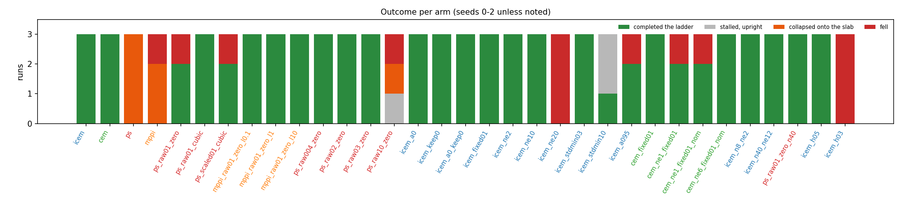
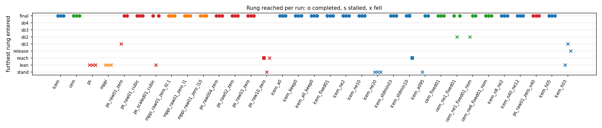
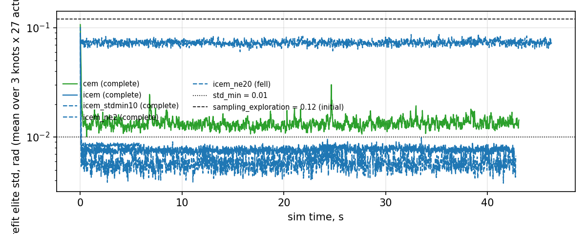
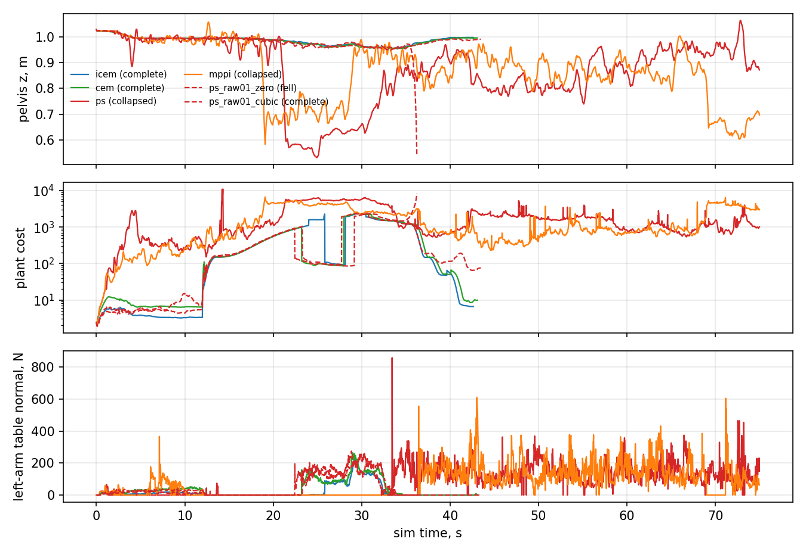
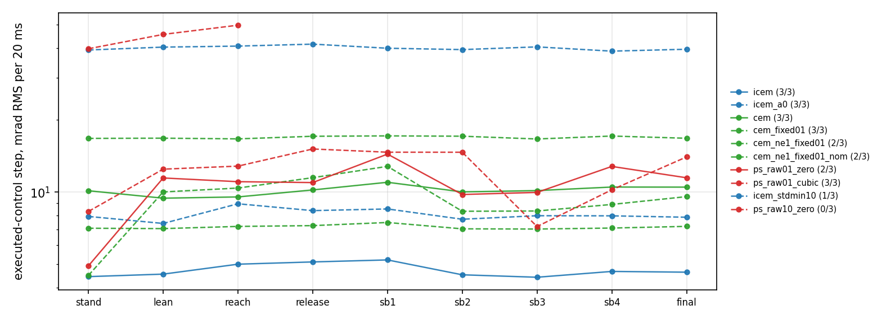
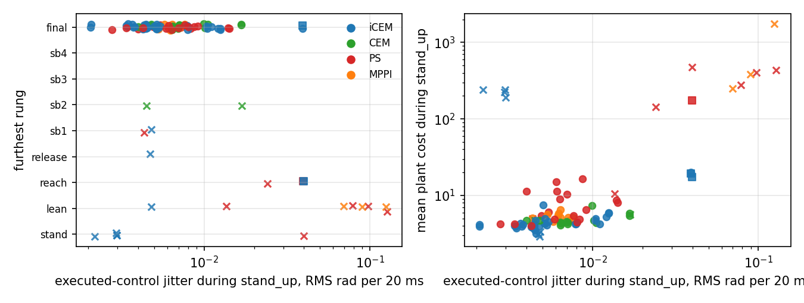

2026-09-10/11 · branch wxie/planner-ablation off icra2026 at 20f20f0e · Lean H12 Magpie, strategy 25, table face 0.985 m · headless lean_bench, 6 planner threads, 20 rollouts, 1.0 s horizon, a plan every 6 ms unless stated · 3 seeds per arm · 132 scored runs, 34 arms
The controller the paper ships (iCEM, agent_planner=7) completes the braced-lean ladder 3/3. Predictive sampling and MPPI, selected by changing that one number, complete 0/3 each and put the robot on the slab with the torso past 130° within the first 25 s. The difference is the sampling standard deviation the two families use. iCEM and CEM read std_min = 0.01 and draw noise in radians; predictive sampling and MPPI read sampling_exploration = 0.12 and multiply it by half the actuator control range, which is 0.03–0.36 rad per joint (median 0.21 rad, 21× iCEM's floor). With the noise set to 0.01 rad in the same units, predictive sampling completes 3/3 (cubic spline) and 2/3 (zero-order hold), and MPPI completes 9/9 across three decades of temperature, at the same 42–50 s as iCEM.
None of iCEM's other components changes the count. Removing iCEM's colored noise, its elite memory, or both (which leaves plain CEM), freezing its variance at the 0.01 floor, or taking 2 or 10 elites instead of 6, each completes 3/3. Taking all 20 (no selection) falls inside 6 s on every seed, and widening the floor to 0.10 rad completes 1/3. Across every elite-mean arm at 0.01 rad the count is 39/39; across the argmin arms it is 12/15, and the three failures are backward falls in the stand-back rungs by 20-sample, zero-order-hold argmin arms (6/9). The plan rate is the larger effect. The bench's --spp 3 is a plan every 6 ms; at the deploy node's 33–50 Hz the shipped iCEM completes 2/3 at each rate with one backward fall at the lean onset, plain CEM 1/3 and predictive sampling at the same noise 0/3 at 33 and 50 Hz.
What separates the working from the failing arms on the plant is the size of the step the executed control takes between plans. Every arm that completes moves the 27 position targets by 4–16 mrad RMS per 20 ms; the shipped predictive sampling and MPPI move them by 70–130 mrad, and the plant cost during the first 12 s of quiet standing is 250–1700 instead of 4–8. Against position actuators with kp = 200 N·m/rad on the legs, a 0.2 rad target step is a 40 N·m torque step at 167 Hz.


All four are implemented in mjpc/planners/ and share the same spline policy, the same rollout, the same cost. Read from the source on 2026-09-10; the shipped numeric values are from Lean_H12_Magpie.xml.
| Predictive sampling (0) | MPPI (9) | Cross-entropy (5) | iCEM (7, shipped) | |
|---|---|---|---|---|
| noise per knot, per actuator | N(0, (0.12 · ½ ctrlrange)²) = 0.03–0.36 rad, white | same as PS | N(0, max(elite std, 0.01)²) rad, white | same std as CEM, AR(1) across the 3 knots with α = 0.7 |
| candidates (20) | the unperturbed nominal + 19 noisy | same as PS | 20 noisy; the nominal is rolled out but cannot win | 2 elites kept verbatim from the last plan + 18 noisy |
| update | argmin | softmax(−J/λ) mean, λ = 0.1 | mean of the 6 best | mean of the 6 best |
| spline, 3 knots | cubic (sampling_representation default) | cubic | zero-order hold (hard-coded) | zero-order hold (hard-coded) |
| carried across plans | the winning plan, time-shifted | the folded plan | the elite mean and the elite variance | the elite mean, the variance, 2 elite plans |
| task hook | — | — | LiveStdMinOverride (off: std_min_state_gated = 0) | — |
Two things in that table are not what the names suggest. First, MPPI at λ = 0.1 is predictive sampling: the return spread across a batch is 500–6000 cost units at the shipped noise, so exp(−ΔJ/0.1) puts all the weight on the argmin (measured effective sample size 1.00 through every phase). Second, CEM's adaptive variance is inert after the first 0.3 s. The refit elite std starts at 0.12 and reaches the 0.01 floor within ~50 plans, and it never re-expands, through the lean, the release or the stand-back:

So in steady state the shipped controller draws N(0, 0.01²) rad per knot and takes the mean of the 6 best of 20.
mjpc/lean_bench.cc runs the agent loop headless: strategy 25 (h12_brace_targeting, 9 rungs: stand 12 s → brace lean 10 s → targeted reach gated on the jaw tip coming within 70 mm of a point 150 mm above the slab → release → four stand-back rungs → final stand), home keyframe, seeded 3 mm state perturbation, 75 s cap. A run completes when it has held the final rung for 3 s, fell when the pelvis drops below 0.5 m (the bench stops), and is scored collapsed from the log when the pelvis went below 0.75 m or the torso tilted past 60° at any step — the shipped predictive-sampling runs end up draped over the slab with the pelvis at 0.5–0.6 m, which the fall stop never trips. Otherwise stalled.
Arms differ only in agent_planner and in model <numeric> overrides applied on the command line before Agent::Initialize; the task, strategy JSON, weights and model are identical. Six knobs were added for this study, each defaulting to what its planner already assumed (commit 7af5d8c5): sampling_noise_raw (PS/MPPI: std in radians, CEM's convention), cem_representation, cem_variance_fixed, cem_include_nominal, a guard so n_elite = 1 does not divide by zero, and agent_allocate_active_only (allocate one planner instead of eleven: 10.1 → 3.7 GB resident, which is what let two runs share the box). The full arm table is studies/planner_ablation/arms.py.
The planner is not run-to-run repeatable (shared RNG across the thread pool) and the noise stream depends on the thread count, so every arm ran at 6 threads and every count below is over ≥ 3 seeds. Three of three has a Wilson 95% lower bound of 44%; the tables separate arms at 3/3 vs 0/3, and anything closer is a difference this study cannot resolve.
One correction to the record. --spp 3 in this bench is a plan every 3 plant steps of 2 ms, i.e. 167 plans/s, not the 33 Hz that every earlier note on this bench assumed (agent_timestep = 0.010 is applied to the planner's copy of the model only). The deploy node plans at 33–45 Hz. Section 7 re-runs the decisive arms at --spp 15.
| arm | planner and overrides | n | completed | fell | collapsed | stalled | furthest rung, per seed | tcomplete median, s | stand jitter, mrad / 20 ms | stand cost | peak brace, N | min reach err, mm |
|---|---|---|---|---|---|---|---|---|---|---|---|---|
icem | iCEM | 3 | 3 | 0 | 0 | 0 | final✓ / final✓ / final✓ | 42.8 | 4.4 | 4.0 | 245 | 15 |
cem | CEM | 3 | 3 | 0 | 0 | 0 | final✓ / final✓ / final✓ | 43.1 | 10.1 | 4.8 | 324 | 11 |
ps | PS | 3 | 0 | 0 | 3 | 0 | lean✗ / lean✗ / lean✗ | — | 97.6 | 401.4 | 1187 | 705 |
mppi | MPPI | 3 | 0 | 1 | 2 | 0 | lean✗ / lean✗ / lean✗ | — | 89.5 | 385.0 | 609 | 349 |

CEM and iCEM complete every seed at 41–50 s. Predictive sampling never leaves the lean rung: the cost is already 20–400 during the stand rung, the brace pad reaches the slab only after the body has folded onto it, and the peak "brace" force of 600–1500 N is the trunk's weight arriving through whatever link landed first. MPPI at λ = 0.1 selects the argmin on every plan (ESS 1.00) and does the same.
| arm | planner and overrides | n | completed | fell | collapsed | stalled | furthest rung, per seed | tcomplete median, s | stand jitter, mrad / 20 ms | stand cost | peak brace, N | min reach err, mm |
|---|---|---|---|---|---|---|---|---|---|---|---|---|
ps_raw01_zero | PS, sampling_noise_raw=1, sampling_exploration=0.01, sampling_representation=0 | 3 | 2 | 1 | 0 | 0 | sb1✗ / final✓ / final✓ | 49.6 | 4.9 | 5.5 | 263 | 25 |
ps_raw01_cubic | PS, sampling_noise_raw=1, sampling_exploration=0.01, sampling_representation=2 | 3 | 3 | 0 | 0 | 0 | final✓ / final✓ / final✓ | 43.5 | 8.3 | 4.9 | 239 | 16 |
ps_scaled01_cubic | PS, sampling_exploration=0.01 | 3 | 2 | 1 | 0 | 0 | final✓ / final✓ / lean✗ | 45.0 | 13.9 | 8.7 | 186 | 38 |
mppi_raw01_zero_l0.1 | MPPI, sampling_noise_raw=1, sampling_exploration=0.01, sampling_representation=0, mppi_temperature=0.1 | 3 | 3 | 0 | 0 | 0 | final✓ / final✓ / final✓ | 46.9 | 5.3 | 5.6 | 267 | 22 |
mppi_raw01_zero_l1 | MPPI, sampling_noise_raw=1, sampling_exploration=0.01, sampling_representation=0, mppi_temperature=1 | 3 | 3 | 0 | 0 | 0 | final✓ / final✓ / final✓ | 43.6 | 6.4 | 5.5 | 253 | 19 |
mppi_raw01_zero_l10 | MPPI, sampling_noise_raw=1, sampling_exploration=0.01, sampling_representation=0, mppi_temperature=10 | 3 | 3 | 0 | 0 | 0 | final✓ / final✓ / final✓ | 46.7 | 6.4 | 5.2 | 317 | 10 |
With 0.01 rad of noise, predictive sampling completes 3/3 on the cubic spline it ships with and 2/3 on CEM's zero-order hold; the one failure fell backward in the first stand-back rung after a clean lean, reach (25 mm) and release. Simply turning the shipped knob down (sampling_exploration 0.12 → 0.01, still scaled by control range) gives 2/3 with one fall during the lean. MPPI with the same noise completes 9/9 at λ ∈ {0.1, 1, 10}, i.e. with effective sample sizes of 1–2, 7–15 and 16–20 out of 20 through the ladder. A near-uniform average of twenty 0.01 rad perturbations (λ = 10, ESS 17–20) still completes in 43–47 s.
At 0.01 rad the three update rules complete 17/18 between them. Table 3 varies the noise with the update held at argmin.
| arm | planner and overrides | n | completed | fell | collapsed | stalled | furthest rung, per seed | tcomplete median, s | stand jitter, mrad / 20 ms | stand cost | peak brace, N | min reach err, mm |
|---|---|---|---|---|---|---|---|---|---|---|---|---|
ps_raw004_zero | PS, sampling_noise_raw=1, sampling_exploration=0.004, sampling_representation=0 | 3 | 3 | 0 | 0 | 0 | final✓ / final✓ / final✓ | 43.9 | 3.4 | 4.2 | 266 | 19 |
ps_raw01_zero | PS, sampling_noise_raw=1, sampling_exploration=0.01, sampling_representation=0 | 3 | 2 | 1 | 0 | 0 | sb1✗ / final✓ / final✓ | 49.6 | 4.9 | 5.5 | 263 | 25 |
ps_raw02_zero | PS, sampling_noise_raw=1, sampling_exploration=0.02, sampling_representation=0 | 3 | 3 | 0 | 0 | 0 | final✓ / final✓ / final✓ | 46.9 | 6.4 | 10.3 | 201 | 13 |
ps_raw03_zero | PS, sampling_noise_raw=1, sampling_exploration=0.03, sampling_representation=0 | 3 | 3 | 0 | 0 | 0 | final✓ / final✓ / final✓ | 47.6 | 6.0 | 15.0 | 286 | 7 |
ps_raw10_zero | PS, sampling_noise_raw=1, sampling_exploration=0.1, sampling_representation=0 | 3 | 0 | 1 | 1 | 1 | reach· / reach✗ / stand✗ | — | 39.7 | 174.0 | 496 | 30 |
ps | PS | 3 | 0 | 0 | 3 | 0 | lean✗ / lean✗ / lean✗ | — | 97.6 | 401.4 | 1187 | 705 |
Predictive sampling completes 3/3 at 0.004, 0.02 and 0.03 rad and 2/3 at 0.01; the one failure in twelve runs across that range is the stand-back fall already described. The stand cost rises with the noise (4.2 → 5.5 → 10.3 → 15.0) and the completion time drifts from 44 to 48 s, but the ladder is finished. At 0.10 rad nothing completes: one seed fell in the stand rung inside 5 s, two leaned, seated the brace at 100–450 N and spent 45 s in the reach rung without the jaw tip ever coming within 130 mm of the 70 mm gate, with a stand cost of 174. At the shipped 0.03–0.36 rad the robot is on the slab by t = 20 s. So for the argmin family the working band spans at least 0.004–0.03 rad, precision is lost first (the reach gate at 0.10) and balance second (the shipped values), and the shipped default sits a factor of 3–10 above the top of the band on the joints that matter.
| arm | planner and overrides | n | completed | fell | collapsed | stalled | furthest rung, per seed | tcomplete median, s | stand jitter, mrad / 20 ms | stand cost | peak brace, N | min reach err, mm |
|---|---|---|---|---|---|---|---|---|---|---|---|---|
icem | iCEM | 3 | 3 | 0 | 0 | 0 | final✓ / final✓ / final✓ | 42.8 | 4.4 | 4.0 | 245 | 15 |
icem_a0 | iCEM, icem_alpha=0 | 3 | 3 | 0 | 0 | 0 | final✓ / final✓ / final✓ | 43.6 | 7.9 | 4.3 | 296 | 8 |
icem_keep0 | iCEM, icem_elite_keep=0 | 3 | 3 | 0 | 0 | 0 | final✓ / final✓ / final✓ | 43.4 | 5.1 | 4.3 | 193 | 21 |
icem_a0_keep0 | iCEM, icem_alpha=0, icem_elite_keep=0 | 3 | 3 | 0 | 0 | 0 | final✓ / final✓ / final✓ | 43.2 | 10.4 | 4.7 | 310 | 6 |
cem | CEM | 3 | 3 | 0 | 0 | 0 | final✓ / final✓ / final✓ | 43.1 | 10.1 | 4.8 | 324 | 11 |
icem_fixed01 | iCEM, cem_variance_fixed=0.01 | 3 | 3 | 0 | 0 | 0 | final✓ / final✓ / final✓ | 41.7 | 4.3 | 3.9 | 157 | 31 |
icem_ne2 | iCEM, n_elite=2 | 3 | 3 | 0 | 0 | 0 | final✓ / final✓ / final✓ | 42.8 | 5.3 | 4.1 | 276 | 14 |
icem_ne10 | iCEM, n_elite=10 | 3 | 3 | 0 | 0 | 0 | final✓ / final✓ / final✓ | 42.5 | 3.7 | 4.1 | 164 | 26 |
icem_ne20 | iCEM, n_elite=20 | 3 | 0 | 3 | 0 | 0 | stand✗ / stand✗ / stand✗ | — | 3.0 | 222.7 | 16 | — |
icem_stdmin03 | iCEM, std_min=0.03 | 3 | 3 | 0 | 0 | 0 | final✓ / final✓ / final✓ | 41.0 | 12.5 | 5.8 | 332 | 10 |
icem_stdmin10 | iCEM, std_min=0.1 | 3 | 1 | 0 | 0 | 2 | final✓ / final· / reach· | 46.3 | 39.2 | 19.5 | 303 | 7 |
icem_a095 | iCEM, icem_alpha=0.95 | 3 | 2 | 1 | 0 | 0 | stand✗ / final✓ / final✓ | 42.0 | 2.1 | 4.2 | 16 | 14 |
No single iCEM component is load-bearing at 167 plans/s. White noise instead of AR(1) (icem_a0), no elite memory (icem_keep0), both together (icem_a0_keep0, which is CEM and completes like the cem row), the variance frozen at the floor (icem_fixed01), and elite sets of 2 or 10 all complete 3/3 within 41–45 s. The elite-set size matters only at its limit: n_elite = 20 averages every sample, so the plan takes no selection signal and the robot falls within 6 s on all three seeds while the stand cost sits at 220. The floor matters at both ends: std_min = 0.03 completes 3/3 (41–44 s, median 1.8 s faster than the shipped floor), std_min = 0.10 completes 1/3 with one seed reaching the final rung at 73 s and one never passing the reach gate — upright throughout, against 0/3 with two collapses for predictive sampling at the same 0.10 rad. And icem_alpha = 0.95 fell on one seed inside 6 s: the AR(1) recursion starts from zero, so the first knot — the one the plant executes — samples at (1−α²)^½ σ, which is 0.31σ = 0.003 rad at α = 0.95 and 0.71σ at the shipped 0.7. That knob is a noise-magnitude knob on the executed action as much as a temporal-correlation knob.
| arm | planner and overrides | n | completed | fell | collapsed | stalled | furthest rung, per seed | tcomplete median, s | stand jitter, mrad / 20 ms | stand cost | peak brace, N | min reach err, mm |
|---|---|---|---|---|---|---|---|---|---|---|---|---|
cem | CEM | 3 | 3 | 0 | 0 | 0 | final✓ / final✓ / final✓ | 43.1 | 10.1 | 4.8 | 324 | 11 |
cem_fixed01 | CEM, cem_variance_fixed=0.01 | 3 | 3 | 0 | 0 | 0 | final✓ / final✓ / final✓ | 42.5 | 7.1 | 4.5 | 276 | 27 |
cem_ne1_fixed01 | CEM, cem_variance_fixed=0.01, n_elite=1 | 3 | 2 | 1 | 0 | 0 | final✓ / sb2✗ / final✓ | 43.5 | 16.8 | 5.6 | 235 | 11 |
cem_ne1_fixed01_nom | CEM, cem_variance_fixed=0.01, n_elite=1, cem_include_nominal=1 | 3 | 2 | 1 | 0 | 0 | sb2✗ / final✓ / final✓ | 43.5 | 4.5 | 4.7 | 214 | 29 |
cem_ne6_fixed01_nom | CEM, cem_variance_fixed=0.01, cem_include_nominal=1 | 3 | 3 | 0 | 0 | 0 | final✓ / final✓ / final✓ | 45.4 | 6.4 | 4.3 | 276 | 20 |
ps_raw01_zero | PS, sampling_noise_raw=1, sampling_exploration=0.01, sampling_representation=0 | 3 | 2 | 1 | 0 | 0 | sb1✗ / final✓ / final✓ | 49.6 | 4.9 | 5.5 | 263 | 25 |
Freezing the variance changes nothing (3/3, executed step 7 mrad). Replacing the mean of 6 with the single best sample keeps 2/3 and raises the executed step to 17 mrad per 20 ms in every rung: with 20 fresh samples and no nominal, the plan jumps to a new random sample every plan. Letting the nominal compete brings the standing step back to 4.5 mrad — the nominal wins most plans while nothing is happening — but the step still rises to 10–13 mrad in the lean and stand-back rungs, and this arm behaves like predictive sampling at the same noise (2/3, one stand-back fall each, the same per-rung step profile), which is the equivalence the bridge was built to check. Putting the elite mean back on top of the included nominal (cem_ne6_fixed01_nom) returns 3/3. Over the whole study at 0.01 rad and 167 plans/s the count is elite-mean 39/39 (thirteen arms) versus argmin 12/15 (five arms); the three argmin failures are all backward falls in stand-back rungs 4–5 at t = 36–37 s, where the brace has been released and the executed step is 10–14 mrad against the elite mean's 5–7, and all three are 20-sample zero-order-hold arms (6/9) — the cubic-spline and 40-sample argmin arms are 6/6.

| arm | planner and overrides | n | completed | fell | collapsed | stalled | furthest rung, per seed | tcomplete median, s | stand jitter, mrad / 20 ms | stand cost | peak brace, N | min reach err, mm |
|---|---|---|---|---|---|---|---|---|---|---|---|---|
icem | iCEM | 3 | 3 | 0 | 0 | 0 | final✓ / final✓ / final✓ | 42.8 | 4.4 | 4.0 | 245 | 15 |
icem_n8_ne2 | iCEM, sampling_trajectories=8, n_elite=2 | 3 | 3 | 0 | 0 | 0 | final✓ / final✓ / final✓ | 49.3 | 5.0 | 5.0 | 173 | 31 |
icem_n40_ne12 | iCEM, sampling_trajectories=40, n_elite=12 | 3 | 3 | 0 | 0 | 0 | final✓ / final✓ / final✓ | 42.3 | 3.4 | 4.0 | 199 | 14 |
ps_raw01_zero | PS, sampling_noise_raw=1, sampling_exploration=0.01, sampling_representation=0 | 3 | 2 | 1 | 0 | 0 | sb1✗ / final✓ / final✓ | 49.6 | 4.9 | 5.5 | 263 | 25 |
ps_raw01_zero_n40 | PS, sampling_noise_raw=1, sampling_exploration=0.01, sampling_representation=0, sampling_trajectories=40 | 3 | 3 | 0 | 0 | 0 | final✓ / final✓ / final✓ | 46.3 | 7.7 | 4.9 | 334 | 7 |
icem_h05 | iCEM, agent_horizon=0.5 | 3 | 3 | 0 | 0 | 0 | final✓ / final✓ / final✓ | 43.4 | 4.5 | 3.5 | 244 | 15 |
icem_h03 | iCEM, agent_horizon=0.3 | 3 | 0 | 3 | 0 | 0 | lean✗ / sb1✗ / release✗ | — | 4.8 | 3.2 | 174 | 24 |
Eight rollouts with 2 elites complete 3/3 at 45–50 s, 40 rollouts with 12 elites 3/3 at 41–45 s; the shipped 20 sits between them and the bench wall-clock scales with the batch (175 s, 330 s, 590 s per run). Doubling predictive sampling's batch to 40 removes its stand-back failure (3/3 at 44–47 s), which is consistent with the argmin needing more samples to find a step that is both an improvement and small. The horizon has a floor: 0.5 s completes 3/3 with the lowest stand cost in the study (3.5), 0.3 s falls on every seed — in the lean rung at 22.5 s, in the release at 34.9 s and in stand-back at 46.7 s — so the 1.0 s the model ships carries a 2× margin over the lookahead the lean needs, and the "40% sampling cost" the XML comment paid for it bought that margin, not the ladder.
| arm | --spp 3 (167 Hz) | --spp 6 (83 Hz) | --spp 10 (50 Hz) | --spp 15 (33 Hz) |
|---|---|---|---|---|
icem | 3/3 | 2/3 (lean@15s) | 2/3 (lean@14s) | 2/3 (lean@15s) |
cem | 3/3 | — | — | 1/3 (lean@14s, lean@14s) |
ps_raw01_cubic | 3/3 | 2/3 (lean@15s) | 0/3 (reach@35s, reach@56s, reach@75s) | 0/3 (lean@14s, reach@53s, lean@14s) |
ps_raw01_zero | 2/3 (sb1@36s) | — | — | 0/3 (lean@14s, sb4@75s, lean@18s) |
cem_ne1_fixed01_nom | 2/3 (sb2@37s) | — | — | 1/3 (lean@14s, lean@14s) |
mppi_raw01_zero_l1 | 3/3 | — | — | 2/3 (lean@15s) |
ps | 0/3 (lean@75s, lean@75s, lean@75s) | — | — | 0/3 (lean@75s, lean@38s, lean@75s) |
| arm | planner and overrides | n | completed | fell | collapsed | stalled | furthest rung, per seed | tcomplete median, s | stand jitter, mrad / 20 ms | stand cost | peak brace, N | min reach err, mm |
|---|---|---|---|---|---|---|---|---|---|---|---|---|
icem | iCEM | 3 | 2 | 1 | 0 | 0 | final✓ / lean✗ / final✓ | 43.5 | 2.0 | 7.4 | 19 | 40 |
cem | CEM | 3 | 1 | 2 | 0 | 0 | final✓ / lean✗ / lean✗ | 54.6 | 4.3 | 7.0 | 30 | 366 |
mppi_raw01_zero_l1 | MPPI, sampling_noise_raw=1, sampling_exploration=0.01, sampling_representation=0, mppi_temperature=1 | 3 | 2 | 1 | 0 | 0 | final✓ / lean✗ / final✓ | 50.1 | 4.2 | 10.5 | 123 | 42 |
cem_ne1_fixed01_nom | CEM, cem_variance_fixed=0.01, n_elite=1, cem_include_nominal=1 | 3 | 1 | 2 | 0 | 0 | lean✗ / final✓ / lean✗ | 45.6 | 2.4 | 6.8 | 21 | 357 |
ps_raw01_cubic | PS, sampling_noise_raw=1, sampling_exploration=0.01, sampling_representation=2 | 3 | 0 | 3 | 0 | 0 | lean✗ / reach✗ / lean✗ | — | 5.1 | 10.7 | 25 | 407 |
ps_raw01_zero | PS, sampling_noise_raw=1, sampling_exploration=0.01, sampling_representation=0 | 3 | 0 | 2 | 0 | 1 | lean✗ / sb4· / lean✗ | — | 3.2 | 8.5 | 29 | 305 |
ps | PS | 3 | 0 | 1 | 2 | 0 | lean✗ / lean✗ / lean✗ | — | 66.7 | 2882.3 | 58 | 1925 |
The plan rate is the largest effect in this study after the noise convention, and it acts on every planner. The shipped iCEM completes 5/5 at 167 Hz (three seeds, two of them run twice) and 2/3 at 83, 50 and 33 Hz, with the one failure at each rate a backward fall 2–3 s into the lean rung (t = 14–15 s), on a different seed each time. Predictive sampling at 0.01 rad, which matched iCEM at 167 Hz, degrades faster: 2/3 at 83 Hz, 0/3 at 50 Hz (two falls in the reach rung, one stall there) and 0/3 at 33 Hz on either spline. Plain CEM is 1/3 at 33 Hz with two lean-onset falls, and the softmax mean (MPPI, λ = 1, ESS ≈ 10) 2/3 with one. Pooled over the 18 runs at 0.01 rad and 33 Hz, 6 completed; of the 12 failures, 10 were backward falls at t = 14–18 s (the CoM ends 1.15 m behind the heels on every one), one was a forward fall in the reach rung at 53 s and one a stall in the last stand-back rung at 74 s. That moment is where the lean target begins ramping forward while the pad is 100 mm above the slab and nothing but the feet carries the body; a plan that is 30 ms stale with a 0.01 rad search radius per knot does not reach the correction in time, and the elite mean's smaller, better-directed step survives it more often than the argmin's. Allen's note in Lean_H12_Magpie.xml on agent_timestep records the twin needing ≥ 50 plans/s to stay upright, and lean.cc's commit-retry comment records a ~25% commit failure on the twin bench; both are this effect. It also means every count elsewhere on this page was taken with a planner fed five times faster than the robot's, and the 3/3 rows are an upper bound on what the deploy node sees.

The executed jitter is what the plant receives regardless of which planner produced it, and it sorts the runs: every run that completed had a stand-rung step of 2–17 mrad per 20 ms, every run that collapsed had 40–130 mrad, and the two failing families in between fail for reasons the step makes visible — n_elite = 20 at 3 mrad with no selection signal, and the 0.10 rad floors at 39–40 mrad. Within the working band the step does not predict completion time; the ranking inside it is planner noise.
Why the elite mean lowers it. The mean of k draws at std σ has std σ/√k in every direction the cost does not discriminate, so CEM's executed step is ~σ/√6 where predictive sampling's argmin is a full σ step whenever some sample beats the nominal by chance. iCEM lowers it a further 2× for two reasons visible in the code: 2 of its 6 elites are last plan's elites re-evaluated with no fresh noise, and its AR(1) recursion starts from zero, so the first knot — the one the plant executes — has variance (1−α²)σ² = 0.51σ² rather than σ². Measured stand jitter: iCEM 4.5, CEM 10.1, PS at 0.01 rad 4.9 (zero-order) and 8.3 (cubic) mrad per 20 ms.
Why the shipped predictive sampling cannot stand. Its per-joint std is 0.13 rad on the knees, 0.34 rad on the hip pitch, 0.28 rad on the torso. The executed targets move 0.07–0.13 rad RMS per 20 ms (3.3 plans), so a noisy sample is displacing the unperturbed nominal at most plans, and the plant sees a random walk of 0.1–0.3 rad target steps at 167 Hz into kp = 200 N·m/rad position servos. The plant cost during quiet standing is 250–1700 against 4–8 for every working arm, and the robot is on the slab by t = 20 s with nothing having been asked of it beyond standing.
What the sampling planner is doing here. With 0.01 rad of noise, a 1 s horizon and a plan every 6 ms, and with the phase schedule and posture keyframes supplying the motion, the planner is a local stochastic regulator around a plan that the cost landscape already shapes. Any fold that moves the plan a little in the direction of lower cost completes the ladder; a fold that moves it 0.2 rad in a random direction does not. This is consistent with the table-height result on the same task (a 100 mm slab change defeats the same planner at every setting tried), where the failure was the cost landscape rather than the search.
--spp 15. The first measurements are the iCEM internals of Table 4 at --spp 10 with 6 seeds (sweep.py --spp 10 --batch C --seeds 0,1,2,3,4,5, ~1.5 h), then std_min 0.02–0.03 at the same rate, since the wider floor did not cost anything at 167 Hz and a stale plan needs a larger step. Whether the fall is the target ramp (target_ramp_sec 18 s on the lean rung) outrunning a 30 ms plan is testable by halving the ramp rate.icem_stdmin03 / icem_stdmin10 in Table 4. A finer ladder (0.005, 0.015, 0.02, 0.05) on both families, 5 seeds each, would give the cliff to a factor of 1.5 (arms.py, ~4 h).--perturb 0.02 and under the 1.035 m slab from the table-height study before claiming they are interchangeable (--table_h needs the residual_Table H parameter from wxie/table-height, which this branch does not carry).cem_ne1_fixed01_nom and cem_ne6_fixed01_nom (~1 h) would settle whether the argmin's 10–14 mrad step in the unbraced rungs costs completions at 167 Hz.--log_hz 167 on the state track) would give the per-plan step directly.mjpc/lean_bench.cc, mjpc/agent.cc, mjpc/planners/{sampling,mppi,cross_entropy,icem}/planner.cc, mjpc/tasks/humanoid_bench/lean/Lean_H12_Magpie.xml (the knob block sits before the first residual_ numeric).studies/planner_ablation/{arms,sweep,analyze,make_figs,tables,tables_rate,make_page}.py, queue.sh–queue4.sh (the overnight order the waves ran in).studies/planner_ablation/runs/wave{1,1_redo,2,3_spp15,4,5_spp10,5_spp6}/ — per-run metric CSV, 50 Hz state track, log, results.jsonl; scored: runs/summary.json (167 Hz) and runs/summary_spp{6,10,15}.json. Regenerate the page with analyze.py → make_figs.py → make_page.py.build_cmake/bin/lean_bench --task "Lean H12 Magpie" --strategy 25 --seed 0 --total_time 75 --threads 6 --spp 3 --numeric agent_allocate_active_only=1 --numeric agent_planner=0 --numeric sampling_noise_raw=1 --numeric sampling_exploration=0.01 --out r.csv --state_out r.state.csv